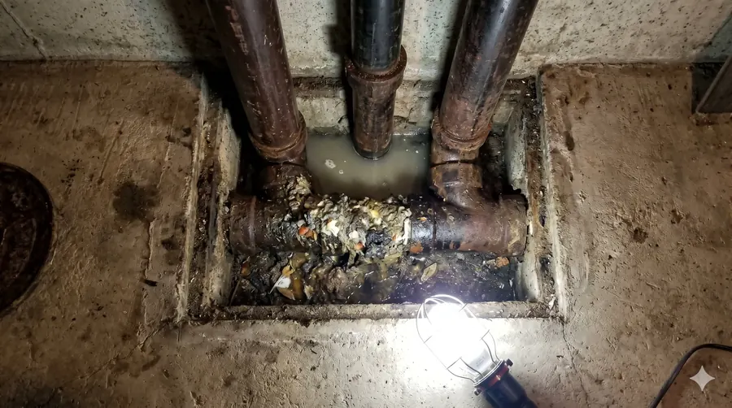

Videoinspección de tuberías en Santiago: qué es, cómo funciona y cuándo conviene
Guía completa sobre el diagnóstico de tuberías con cámara profesional: proceso, hallazgos, informe y cuándo es la opción correcta.

En el mantenimiento de propiedades y sistemas de alcantarillado, las reparaciones realizadas sin un diagnóstico previo a menudo conducen a soluciones incompletas o fallas repetidas. Actuar a ciegas frente a un atasco recurrente o una filtración oculta suele resultar en intervenciones costosas y destructivas que no resuelven la causa raíz del problema.
La videoinspección de tuberías se posiciona como una herramienta diagnóstica fundamental, no como la reparación en sí misma. Este enfoque técnico permite evaluar el estado real del interior de las redes antes de planificar cualquier intervención, cambiando el paradigma tradicional de "romper para descubrir" por uno basado en evidencia visual.
1. ¿Qué es la videoinspección de tuberías?
Es un procedimiento técnico no destructivo que consiste en introducir una cámara especialmente diseñada a través de accesos existentes en la red de tuberías. A medida que la cámara avanza por el interior del ducto, transmite imágenes de alta resolución en tiempo real hacia un monitor, permitiendo al especialista evaluar detalladamente el estado estructural y funcional del sistema.
Para garantizar precisión, este servicio se realiza utilizando equipamiento de alto estándar. En Visión Inspección operamos con sistemas como Powerwill, cuyas especificaciones técnicas incluyen: un cable de fibra de vidrio de 30 metros de longitud que aporta flexibilidad y resistencia, cámara HD 1080p protegida por una lente de cristal de zafiro con certificación IP68 (totalmente sumergible), 12 luces LED ajustables para iluminar ductos completamente oscuros, un monitor LCD de 9 pulgadas con sistema de grabación (DVR) incorporado, y una sonda localizadora de 512Hz integrada en el cabezal de la cámara.
A diferencia de los métodos tradicionales, como el uso de varillas o sondas manuales que solo permiten percibir obstáculos por tacto, la videoinspección proporciona evidencia visual indiscutible de lo que ocurre realmente en el interior, documentando la ubicación y naturaleza exacta de cualquier anomalía.
2. ¿Cómo funciona el proceso?
Contacto inicial y agendamiento
El cliente nos contacta para describir los síntomas de su problema (atascos, malos olores, humedades). Se evalúa la viabilidad del servicio y se programa la visita técnica en un horario conveniente.
Ingreso a la red
La cámara se introduce a través de registros de inspección, cámaras decantadoras, piletas o ventilaciones existentes. Este paso es fundamental: no se requiere demolición ni rotura de superficies para realizar el diagnóstico.
Inspección y monitoreo en tiempo real
La cámara viaja a través del sistema empujada por el cable de fibra de vidrio. El técnico monitorea el trayecto en la pantalla, prestando atención a cada unión, cambio de dirección o irregularidad, grabando todo el proceso.
Rastreo de superficie (si se requiere)
Cuando se detecta una falla importante, se utiliza un equipo receptor en la superficie para captar la señal de 512Hz que emite el cabezal de la cámara, marcando la posición exacta y la profundidad aproximada del problema.
Entrega de resultados
Se consolida la información en un informe técnico digital, que incluye el video, fotografías de los hallazgos y conclusiones. Cabe destacar que, si bien el proceso aporta gran valor, no garantiza detectar problemas ocultos detrás de obstrucciones impenetrables, sino que provee evidencia visual de lo que es accesible.
3. ¿Qué puede detectar una videoinspección?
La ventaja principal es que permite evaluar el estado real de la red antes de decidir cómo y dónde intervenir. Esto puede orientar la reparación hacia el tramo con daño real y acotar las zonas de demolición si fueran necesarias.
4. ¿Cuándo conviene realizar una videoinspección?
| Situación | Beneficio |
|---|---|
| Atasco recurrente que vuelve | Identificar causa raíz en lugar de tratar síntoma |
| Humedad sin origen claro | Descartar o confirmar fuga en alcantarillado |
| Antes de comprar una propiedad | Verificar estado real de la red antes de escriturar |
| Edificio con quejas de múltiples propietarios | Evaluar estado de columnas y colectores |
| Post-reparación o post-sismo | Verificar resultado o detectar nuevos desplazamientos |
| Mantención preventiva | Detectar deterioro acumulado antes de emergencias |
5. ¿Qué incluye el informe técnico?
- Video del recorrido completo de la inspección.
- Capturas fotográficas de cada hallazgo relevante.
- Descripción técnica por punto documentado.
- Ubicación aproximada mediante sonda localizadora (cuando aplica).
- Recomendación de acción (si corresponde).
- Cotización de reparación (si aplica y se acuerda).
Este reporte técnico es sumamente útil como respaldo para presentar a compañías de seguros, resolver disputas legales, exponer frente a asambleas de copropietarios en edificios o planificar presupuestos de reparación de forma informada. Cabe ser honesto: el informe provee evidencia documentada del estado visual de la red en ese momento, pero no constituye una garantía legal de la estructura.
6. ¿La videoinspección requiere romper el piso o los muros?
NO hay demolición alguna para realizar la inspección. La cámara ingresa utilizando los puntos de acceso que ya posee la red. Si el diagnóstico posterior indica que es necesaria una reparación, conocer la ubicación exacta del problema gracias a la sonda localizadora minimiza sustancialmente el área de demolición. Esta es la ventaja central en comparación con el enfoque tradicional de intervenir primero y diagnosticar en el camino.
Videoinspección de tuberías en Santiago y regiones
7. Preguntas Frecuentes (FAQ)
¿En qué tipo de tuberías puede usarse la cámara de inspección?
En alcantarillados, desagües pluviales y redes sanitarias, generalmente en diámetros que van desde 40mm hasta 200mm, abarcando la mayoría de las instalaciones domiciliarias y de edificios.
¿Cuánto tiempo demora una videoinspección?
Depende de la extensión de la red y las facilidades de acceso, pero un servicio estándar en un domicilio particular suele demorar entre 1 y 2 horas.
¿Atienden domicilios particulares y también edificios?
Sí, brindamos servicio tanto a casas particulares como a comunidades de edificios y empresas, adaptando el procedimiento a la escala del requerimiento.
¿Se entrega el video de la inspección al cliente?
Por supuesto. Todo el material audiovisual capturado es propiedad del cliente y se entrega de forma digital junto con el informe escrito.
¿Pueden dar una cotización de reparación durante la misma visita?
Si la inspección arroja daños claros y evaluamos que contamos con la solución técnica idónea, podemos preparar una cotización de reparación en base al diagnóstico visual.
¿Atienden en comunas fuera de Santiago?
Nuestra base principal está en Santiago, pero sí nos desplazamos a regiones. Contáctenos para consultar factibilidad y costos de traslado.
¿Qué diferencia hay entre videoinspección y usar una sonda o varilla tradicional?
Una sonda tradicional solo destapa o siente obstáculos por tacto; se trabaja a ciegas. La videoinspección muestra visualmente si hay raíces, tubos aplastados, sarro y la gravedad del daño, permitiendo solucionar el problema real y no solo el síntoma.
¿Tiene un problema en sus tuberías y quiere diagnóstico antes de intervenir?
Obtener evidencia visual antes de actuar permite tomar decisiones con información real.